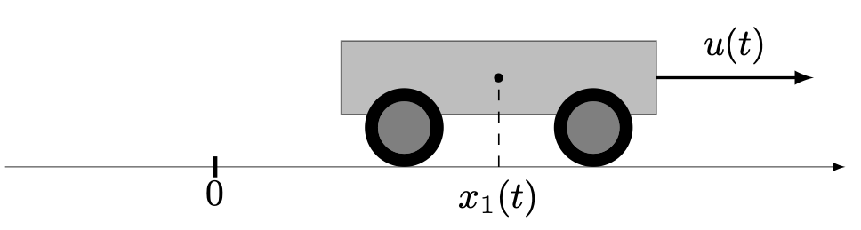

Double integrator: time minimisation
The problem consists in minimising the final time $t_f$ for the double integrator system
\[ \dot x_1(t) = x_2(t), \quad \dot x_2(t) = u(t), \quad u(t) \in [-1,1],\]
and the limit conditions
\[ x(0) = (1,2), \quad x(t_f) = (0,0).\]
This problem can be interpretated as a simple model for a wagon with constant mass moving along a line without fricton.
First, we need to import the OptimalControl.jl package to define the optimal control problem and NLPModelsIpopt.jl to solve it. We also need to import the Plots.jl package to plot the solution.
using OptimalControl
using NLPModelsIpopt
using PlotsOptimal control problem
Let us define the problem
ocp = @def begin
tf ∈ R, variable
t ∈ [0, tf], time
x = (q, v) ∈ R², state
u ∈ R, control
tf ≥ 0
-1 ≤ u(t) ≤ 1
q(0) == 1
v(0) == 2
q(tf) == 0
v(tf) == 0
-5 ≤ q(t) ≤ 5, (1)
-3 ≤ v(t) ≤ 3, (2)
ẋ(t) == [v(t), u(t)]
tf → min
endIn order to ensure convergence of the direct solver, we have added the state constraints labelled (1) and (2):
\[-5 \leq q(t) \leq 5,\quad -3 \leq v(t) \leq 3,\quad t \in [0, t_f].\]
For a comprehensive introduction to the syntax used above to define the optimal control problem, check this abstract syntax tutorial. In particular, there are non-unicode alternatives for derivatives, integrals, etc.
Solve and plot
Solve it
sol = solve(ocp; print_level=4)Total number of variables............................: 754
variables with only lower bounds: 1
variables with lower and upper bounds: 753
variables with only upper bounds: 0
Total number of equality constraints.................: 504
Total number of inequality constraints...............: 0
inequality constraints with only lower bounds: 0
inequality constraints with lower and upper bounds: 0
inequality constraints with only upper bounds: 0
Number of Iterations....: 114
(scaled) (unscaled)
Objective...............: 5.4642225321789342e+00 5.4642225321789342e+00
Dual infeasibility......: 4.7022924663004768e-13 4.7022924663004768e-13
Constraint violation....: 9.6678220984358632e-13 9.6678220984358632e-13
Variable bound violation: 9.7857721925720398e-09 9.7857721925720398e-09
Complementarity.........: 1.1583847648433187e-11 1.1583847648433187e-11
Overall NLP error.......: 1.1583847648433187e-11 1.1583847648433187e-11
Number of objective function evaluations = 130
Number of objective gradient evaluations = 102
Number of equality constraint evaluations = 130
Number of inequality constraint evaluations = 0
Number of equality constraint Jacobian evaluations = 117
Number of inequality constraint Jacobian evaluations = 0
Number of Lagrangian Hessian evaluations = 114
Total seconds in IPOPT = 2.025
EXIT: Optimal Solution Found.and plot the solution
plot(sol)The solve function has options, see the solve tutorial. You can customise the plot, see the plot tutorial.